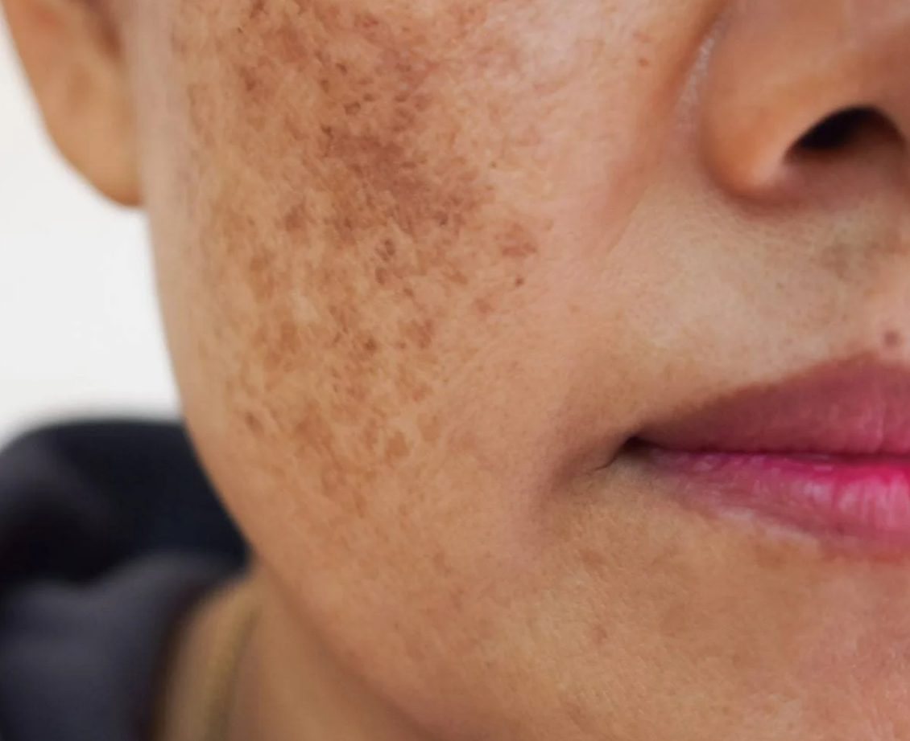

MELASMA: Como maquiar as manchas?
Você tem MELASMA e não sabe bem como fazer a maquiagem na pele com manchas? Irei te ajudar!

O que é um Melasma?
Melasma é uma hiperpigmentação da pele, decorrente da deposição aumentada de melanina, proteína que garante
a coloração da pele e evita os danos da radiação ultravioleta no DNA.
O transtorno resulta na formação de manchas
castanho-escuras ou marrom-acinzentadas, com limites bem demarcados, mas formato irregular. Embora se
localizem
preferencialmente na face, na região das maçãs do rosto, da testa, do lábio superior, no queixo e nas
têmporas,
as lesões também podem surgir no colo, pescoço e antebraços.
O tamanho das manchas pode variar bastante. Em alguns
casos, elas chegam a tomar as duas faces completamente.
Como preparar a pele para a maquiagem?
Agora que você já sabe mais sobre o Melasma e como tratá-lo. Vamos às dicas de maquiagem!
É importante dizer que você não tem de esconder as manchas do Melasma. Pode assumi-las, se desejar. Elas não
deixam você menos linda.
Para preparar a pele, serão necessários os seguintes passos:
✔ O primeiro passo é a limpeza de pele!
✔ Aplicar um tônico facial após lavar o rosto
✔ Hidratação. Uma pele hidratada deixa a maquiagem mais bonita, não é mesmo?
✔ Protetor solar
✔ Aplicar primer, pode ser um com leve tonalidade lilás (ou o tom pêssego). Caso não tenha
nenhum desses, use um pouco do transparente mesmo. Isso vai melhorar o acabamentos das sobreposições
de produtos e dar um aspecto natural.
Como maquiar as manchas?
✔ Passo 1 : Aplicar um corretivo da cor PÊSSEGO, apenas nas áreas das manchas de melasma.(Você pode usar um pincel de esfumar sombra, de corretivo ou até dar batidinhas com os dedos mesmo usando o produto)
✔ Passo 2: Depois da anulação, uma fina camada de corretivo que deve ser um tom a menos da cor da sua pele nas olheiras e um pouco por cima das manchas.
✔ Passo 3: Aplique uma leve camada de base para uniformizar o tom do rosto todo. A base pode ser de cobertura média a alta, depende do grau do seu melasma.
✔ Passo 4: Finalize aplicando pó compacto ou solto com um pincel fofo e grande.
Pronto! Agora, você sabe como maquiar a pele com melasma do modo mais profissional.